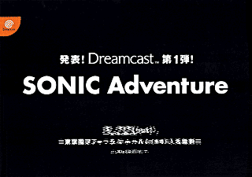
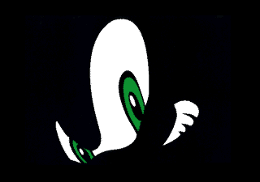
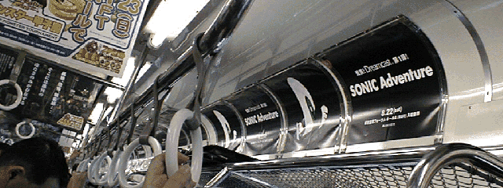

| ファミ通トレイン | |
|  |  |
| 今日から山手線でソニック最新作の制作発表会を告知！ | |
|
７／１６〜３１の期間、週間ファミ通５００号を記念して、東京の山手線にファミ通トレインが走るんだけど、
その車両の窓側の広告スペースを丸ごとソニックが占領しちゃうのだ！
山手線は１日１３周する環状線なので、１時間待っていれば内回り／外回りのどちらかには来るはず！ 期間限定なのでぜひ乗ってみてね！ さあ、ソニックといっしょに東京をぐるぐるまわってみよう！ | |
|  | |
| SONIC TEAM INFORMATION | |